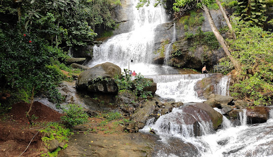
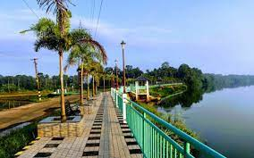

It is Sandhara type temple with cardinal doors on Four sides. The plinth and the wall together are of granite stone work and
the rest of timber and sheet roof in circular vimana. Dwarapalakas are made of wood. Main deity Lord Shiva is facing east.
Square ardhamandapa contains beautiful wooden carvings on the ceiling. Pranala is a typical ornate Kerala type with standing
Yaksha bearing at its tip

AREEKKAL WATERFALLS
Areekkal Waterfalls located in Pampakuda Panchayat of Ernakulam district which was not known much to tourists until earlier.
It received attraction in 2014, after the Kerala government launched the Areekkal tourism development project. It is located on
the Piramadam-Vettimudu route and is around 100 feet in height with forest and rubber plantations in its background.
It is one of the major domestic tourist destination in Pampakuda.
The waterfall originates from Mannathur Hills in Tirumaradi Panchayat.

AATTUTHEERAM PARK
Piravom Attutheeram River View Park is a recent development carried out by the Piravm Municipality.
It is around 30Km from Cochin